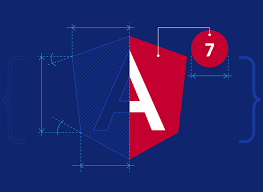

PROYECTOS EN ANGULAR.
A lo largo de mi carrera como desarrollador especializado en Angular, he dirigido y contribuido a una serie de proyectos destacados por su solidez arquitectónica y la creación de experiencias web dinámicas. Angular ha sido un pilar fundamental en estos logros, permitiéndonos construir aplicaciones web escalables y eficientes. Un proyecto significativo fue la implementación de un sistema de gestión de contenido para una empresa de medios. Angular facilitó la creación de una interfaz de usuario intuitiva y la administración eficiente de contenidos dinámicos, mejorando la experiencia tanto para los creadores como para los consumidores de contenido. Otro proyecto destacado fue el desarrollo de un panel de administración integral para una plataforma de comercio electrónico. Angular nos permitió crear una interfaz de usuario rica en funcionalidades y altamente receptiva, proporcionando a los administradores herramientas poderosas para gestionar el negocio de manera efectiva. En cada uno de estos proyectos, Angular demostró ser un framework robusto y versátil que acelera el desarrollo y mejora la mantenibilidad del código. La modularidad y la capacidad de crecimiento de Angular fueron esenciales para adaptarnos a los requisitos cambiantes del negocio. Estos ejemplos ilustran mi compromiso con la excelencia en el desarrollo web utilizando Angular como una herramienta clave. Estoy emocionado por continuar explorando nuevas oportunidades para aplicar mi experiencia en Angular y contribuir al éxito de proyectos futuros..